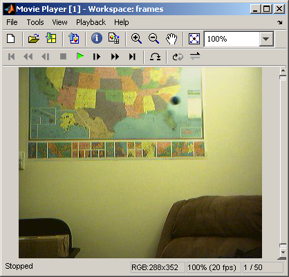
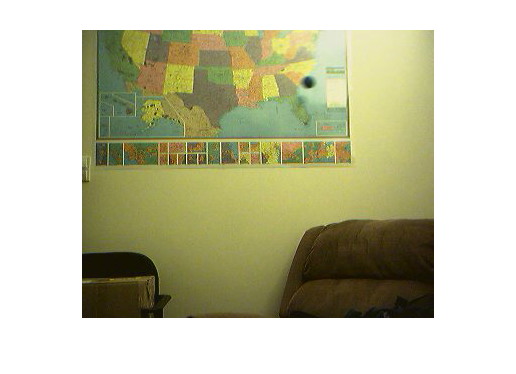
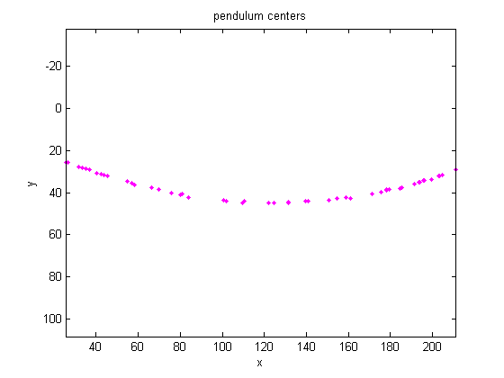
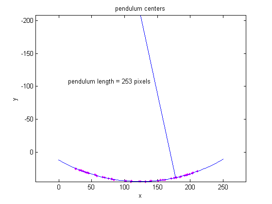

動いている振り子の長さを検出
Image Acquisition Toolbox™ で時系列のイメージをキャプチャし、Image Processing Toolbox™ でキャプチャしたイメージを解析します。このデモは、動いている振り子の長さをどのように計算するかを示します。
目次
手順 1:イメージの取得
動いている振り子のイメージ フレームを読み込みます。Image Acquisition Toolbox の以下の関数を使用して、MAT ファイル pendulum.mat のフレームが取得されました。
% Access an image acquisition device (video object). % vidobj=videoinput('winvideo',1,'RGB24_352x288'); % Configure object to capture every fifth frame. % set(vidobj,'FrameGrabInterval',5); % Configure the number of frames to be logged. % nFrames=50; % set(vidobj,'FramesPerTrigger',nFrames); % Access the device's video source. % src=getselectedsource(vidobj); % Configure device to provide thirty frames per second. % set(src,'FrameRate','30'); % Open a live preview window.Focus camera onto a moving pendulum. % preview(vidobj); % Initiate the acquisition. % start(vidobj); % Wait for data logging to finish before retrieving the data. % wait(vidobj, 10); % Extract frames from memory. % frames = getdata(vidobj); % Clean up.Delete and clear associated variables. % delete(vidobj) % clear vidobj %load MAT-file load pendulum;
手順 2:IMPLAY による列の調査
次のコマンドを実行して、implay のイメージ列を調査します。
implay(frames);
手順 3:振り子が揺れる領域の選択
イメージ列の各フレームの上半分で振り子が揺れているのがわかります。振り子が揺れている領域のみを含む新しい一連のフレームを作成します。
関数 imcrop を使用して一連のフレームを抜き出すには、最初に 1 つのフレームで関数 imcrop を実行し、その出力イメージを保存します。次に、前の出力のサイズを使用して、一連のフレーム領域を作成します。便宜上、関数 imcrop の pendulum.mat によって読み込まれた rect を使用します。
nFrames = size(frames,4); first_frame = frames(:,:,:,1); first_region = imcrop(first_frame,rect); frame_regions = repmat(uint8(0), [size(first_region) nFrames]); for count = 1:nFrames frame_regions(:,:,:,count) = imcrop(frames(:,:,:,count),rect); end imshow(frames(:,:,:,1))
imshow(frame_regions(:,:,:,1));

手順 4:各フレームでの振り子の分割
振り子は背景よりも暗くなっていることに注目してください。フレームをグレースケールに変換し、im2bw を使用してしきい値処理し、関数 imopen および imclearborder を使用して背景構造を除去することで、各フレームで振り子を分割できます。
% initialize array to contain the segmented pendulum frames. seg_pend = false([size(first_region,1) size(first_region,2) nFrames]); centroids = zeros(nFrames,2); se_disk = strel('disk',3); for count = 1:nFrames fr = frame_regions(:,:,:,count); imshow(fr) pause(0.2) gfr = rgb2gray(fr); gfr = imcomplement(gfr); imshow(gfr) pause(0.2) bw = im2bw(gfr,.7); % threshold is determined experimentally bw = imopen(bw,se_disk); bw = imclearborder(bw); seg_pend(:,:,count) = bw; imshow(bw) pause(0.2) end
手順 5:各フレームで分割された振り子の中心の検出
フレームによって振り子の形状が異なっていることがわかります。振り子の中心のみが必要なので、これは重大な問題ではありません。振り子の中心を使用して、振り子の長さを検出します。
regionprops を使用して、振り子の中心を計算します。
pend_centers = zeros(nFrames,2); for count = 1:nFrames property = regionprops(seg_pend(:,:,count), 'Centroid'); pend_centers(count,:) = property.Centroid; end
関数 plot を使用して振り子の中心を表示します。
x = pend_centers(:,1); y = pend_centers(:,2); figure plot(x,y,'m.'), axis ij, axis equal, hold on; xlabel('x'); ylabel('y'); title('pendulum centers');
手順 6:振り子の中心を介した円の近似による半径の計算
以下の円の基本方程式を書き換えます。
(x-xc)^2 + (y-yc)^2 = radius^2
ここで、(xc,yc) は中心であり、パラメーター a、b、c で表すと、以下のようになります。
x^2 + y^2 + a*x + b*y + c = 0
ここで、a = -2*xc、b = -2*yc、c = xc^2 + yc^2 - radius^2 です。
最小二乗法を使用して、パラメーター a、b、および c について解くことができます。上記の方程式を以下のように書き換えます。
a*x + b*y + c = -(x^2 + y^2)
以下のように書き換えることもできます。
[x y 1] * [a;b;c] = -x^2 - y^2
バックスラッシュ (\) 演算子を使用してこの方程式を解きます。
円の半径は振り子の長さです (ピクセル単位)。
abc = [x y ones(length(x),1)] \ -(x.^2 + y.^2); a = abc(1); b = abc(2); c = abc(3); xc = -a/2; yc = -b/2; circle_radius = sqrt((xc^2 + yc^2) - c); pendulum_length = round(circle_radius)
pendulum_length = 253
振り子の中心のプロットの上に円および円の中心を重ねます。
circle_theta = pi/3:0.01:pi*2/3; x_fit = circle_radius*cos(circle_theta)+xc; y_fit = circle_radius*sin(circle_theta)+yc; plot(x_fit,y_fit,'b-'); plot(xc,yc,'bx','LineWidth',2); plot([xc x(1)],[yc y(1)],'b-'); text(xc-110,yc+100,sprintf('pendulum length = %d pixels', pendulum_length));